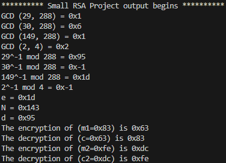

RSA Encryption Implementation
Technologies: Java, RSA Algorithm, Euclidean Algorithm, Modular Exponentiation
Project Overview
This project is a Java-based RSA encryption system that enables secure encryption and decryption using public and private key pairs. The project implements essential cryptographic techniques, including the RSA algorithm, modular inverses, and efficient exponentiation for encryption.
Key Features & Contributions
- Key Generation: Developed an RSA key generator that produces secure public and private key pairs using two prime numbers and the Euclidean algorithm.
- Encryption & Decryption: Implemented the RSA algorithm for encrypting and decrypting messages using modular exponentiation.
- Extended Euclidean Algorithm: Applied the extended Euclidean algorithm to compute modular inverses, ensuring secure private key computation.
- Efficient Modular Exponentiation: Optimized the encryption and decryption process by implementing the square-and-multiply method for faster modular exponentiation.
- Test Suite: Created test cases to verify the correctness of encryption, decryption, and key generation using various inputs.
Security Practices
Adhered to cryptographic best practices, ensuring secure key generation and message encryption. The system was tested with different key sizes and message values to validate the integrity of the RSA encryption cycle.
Sample Output
Above is a sample output showing RSA key generation, encryption, and decryption in action.